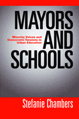

<body bgcolor="#FFFFFF" text="#000000" link="#0000FF" vlink="#CC0000" alink="#CC0000"><center><hr width="350" size="1" align="center" noshade>Does mayoral control lead to better urban schools?<hr width="350" size="1" align="center" noshade><p><a href="https://cdcshoppingcart.uchicago.edu/Cart/ChicagoBook.aspx?ISBN=9781592134687&&PRESS=temple" target="_top">Buy this book!</a> | <a href="https://cdcshoppingcart.uchicago.edu/Cart/Cart.aspx?PRESS=temple" target="_top">View Cart</a> | <a href="https://cdcshoppingcart.uchicago.edu/Cart/Cart.aspx?PRESS=temple" target="_top">Check Out</a></p><p></p></center><!--none//--><h1>Mayors and Schools</h1>
<H2>Minority Voices and Democratic Tensions in Urban Education</H2>
<h3>Stefanie Chambers</h3>
<P>cloth 1-59213-468-8 $74.50, Jun 06, <FONT COLOR=#990033>Available</FONT>
<br>paper 1-59213-469-6 $28.95, Jun 06, <FONT COLOR=#990033>Available</FONT>
<BR> 240 pp
5.5x8.25
10&nbsp;tables 12&nbsp;halftones
</P><BLOCKQUOTE><I>"The arguments in this book are provocative. Chambers argues that the principle of democratic participation, e.g. election of school board members, and participation in school policy decisions, should take precedence over centralized decision making. Her hope is that a balance can be struck in urban education governance structures that would allow the improvements seen under mayoral control systems to continue under a more democratic decision making structure. Chambers is a careful scholar who pays attention to detail. The book will generate debate and will make a contribution to the literature on urban education reform."</i>
<br>&#151;<b>Paula D. McClain</b>, Professor of Political Science, Duke University, and co-author of <i>Can We All Get Along?: Racial and Ethnic Minorities in American Politics, 4th edition</i><i></I></BLOCKQUOTE>
<p>America's urban public schools are in crisis. Compared with their suburban counterparts, urban students have lower test scores and higher dropout rates. In an attempt to improve educational quality, responsibility for school governance has been handed over to mayors in several U.S. cities. Based on extensive research, including more than eighty in-depth interviews, <i>Mayors and Schools</i> examines whether mayoral control results in higher student achievement and considers the social costs of diminished community involvement.
<p>Using a comparative case study approach, Stefanie Chambers researches the impact of mayoral educational control in two big-city school districts, Chicago and Cleveland. On the whole, she finds, student test scores have improved since the takeovers but there are now fewer opportunities for grassroots participation in the educational system by minority community members. Chambers contends that these findings have important implications for democratic theory, arguing that urban schools cannot be successful in the long run without the active participation of local citizens.
<BR>&nbsp;<h2>Excerpt</h2><P>Excerpt available at <a href="http://www.temple.edu/tempress">www.temple.edu/tempress</a></p>
<BR>&nbsp;<h2>Reviews</h2>
<p><i>"In </i>Mayors and Schools<i>, Stefanie Chambers adds momentum to the trend of conducting comparative city studies. In an examination of school politics in Chicago and Cleveland, Chambers cautions that mayoral-led reform risks keeping parents and other community members on the periphery as urban education is reshaped. She gives us the important reminder that a preoccupation with executive efficiency may come at the cost of citizen involvement."</i>
<br>&#151;<b>Clarence Stone</b>, Research Professor, George Washington University and author of <i>Regime Politics</i>
<p><i>"I believe that this book will make a tremendous contribution to the current and future debates about urban school reform. The focus on two important U.S. cities will make it a must read for those interested in urban politics. The focus on minority incorporation will draw readers interested in race and American politics. Chambers' focus on urban school reform will make this book of interest to those who care about the state of America's urban school systems."</i>
<br>&#151;<b>Marion Orr</b>, Brown University, author of <i>Black Social Capital: The Politics of School Reform in Baltimore</i>
<p><I>"Recommended"</I><br>&#151<b><I>Choice</I></b>
<p><i>"[T]imely and nuanced�Chambers� book is notable for its attention to historical context and its balanced presentation of competing evidence."</i>
<br>&#151;<b><i>Urban Affairs Review</i></b>
<BR>&nbsp;<h2>Contents</h2><P>
<p>Acknowledgments
<p><b>Part I. Introduction</b>
<br>1. School Reform in Two American Cities
<p><b>Part II. The Politics of School Reform and Minority Political Empowerment</b>
<br>2. Big-City Mayors and the Politics of School Reform
<br>3. Politics and Education in the "Windy City"': Chicago
<br>4. Politics and Education in the "Comeback City": Cleveland
<p><b>III. Measuring Success in Education Reform</b>
<br>5. Responsiveness and Community Incorporation
<br>6. Administrative Accountability to Minority Issues
<br>7. Reform and Measuring Student Improvement
<p><b>Part IV. Conclusion</b>
<br>8. Resolving Tensions in Urban Education
<p>Appendix: Interview Questionnaires
<br>Notes
<br>References
<br>Index
</P><BR>&nbsp;<H2>About the Author(s)</H2>
<table><tr><td valign="top"><img src="/tempress/authors/1838_au.gif" height="90" width="75"></td><td width="100%" valign="middle"><p><b>Stefanie Chambers</b> is Assistant Professor of Political Science at Trinity College in Hartford, Connecticut. She has written widely on urban education reform, racial and ethnic politics, and urban public policy.</P></td></tr></table>
<BR><H2>Subject Categories</H2>
<p><A HREF="/tempress/political.html" TARGET="_top">Political Science and Public Policy</a>
<BR><A HREF="/tempress/education.html" TARGET="_top">Education</a>
<BR><A HREF="/tempress/race.html" TARGET="_top">Race and Ethnicity</a>
</p>
<p align="center"><a href="https://cdcshoppingcart.uchicago.edu/Cart/ChicagoBook.aspx?ISBN=9781592134687&&PRESS=temple" target="_top">Buy this book!</a> | <a href="https://cdcshoppingcart.uchicago.edu/Cart/Cart.aspx?PRESS=temple" target="_top">View Cart</a> | <a href="https://cdcshoppingcart.uchicago.edu/Cart/Cart.aspx?PRESS=temple" target="_top">Check Out</a></p><p><font face="Arial" size="1"><a href="copyright.html" onMouseOver="window.status='Web Copyright Policy';return true;" onMouseOut="window.status=''" title="Web Copyright Policy">&copy;</a> 2015 <a href="http://www.temple.edu" target="new" onMouseOver="window.status='Link to Temple University home page';return true;" onMouseOut="window.status=''" title="Link to Temple University home page">Temple University</a>. All Rights Reserved. http://www.temple.edu/tempress/titles/1838_reg.html</font></p>